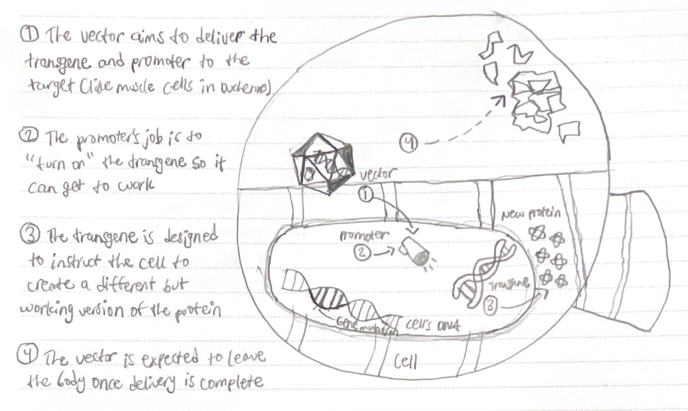

DMD
Duchenne Muscular Dystrophy (DMD) is a disease caused by a mutation in the gene that codes for dystrophin that results in muscle deterioration, cardiomyopathy, and eventually death.
The dystrophin protein is located on the on the short arm of the X chromosome, specifically at the Xp21.2 locus (Duan et. al.). This means that the gene is situated on the X chromosome’s short arm, at position 21.2.
The dystrophin protein interacts with the sarcolemma, cytoskeleton, channel proteins, and signalling or scaffolding proteins. Dystrophin and its binding partners form the associated protein complex (DAPC).
Distrophin deficiency results in the disassembly of the DAPC, and muscles fail to regenerate. This underlies muscle wasting, fibrosis, and fat replacement.
DMD usually manifests at 2-3 years of age as reduced motor skills (difficulties climbing stairs, waddling, frequent falls), and most patients become wheelchair dependent around 10 years of age. According to Broomfield et. al., median life expectancy was 22.0 years for DMD patients. With early treatment, it can reach 30 years. However, patients are usually confined to a ventilator around 20 years old.
Looking forward, a number of therapies that aim to restore the missing dystrophin protein or address secondary pathology have received regulatory approval and many others are in clinical development. DMD treatments have a bright future, as is shown by the same study by Broomfield et. al. In fact, patients born after 1990 have a median life expectancy of over 28 years.
Symptoms and Progression
Patients are typically diagnosed with Duchenne Muscular Dystrophy around the age of four (Ferizovic et al., 2022). Despite this, many boys begin to show symptoms much earlier due to muscle weakness. Parents and doctors are able to identify that the disease is developing in a child due to delayed or unreached physical milestones. Specific markers include wheelchair dependence and cardiomyopathy (Koeks et al., 2017). The majority of people with Duchenne Muscular Dystrophy become non-ambulantory in their early teens (Ferizovic et al., 2022). Regardless of the stage of their disease, patients are recommended to do regular submaximal activities.
Disease progression is typically marked by symptoms such as loss of head control and loss of natural movement of the torso while performing daily actions such as walking or getting out of bed (Wasilewska et al., 2020). Progression includes muscle weakness, breathing difficulties, cardiac complications, and gastroenterological failure, a syndrome that occurs when a person’s intestines can’t digest food or absorb the fluids that are essential to life (Wasilewska et al., 2020). Eventually, since many patients typically spend the majority of their time sitting, the curve of the spine worsens. The thoracic curve is the natural forward curve of the middle 12 vertebrae of the spine. For DMD patients, sitting with poor posture for extended periods of time causes the lower spine to curve forward, developing a condition known as lumbar kyphotization (Wasilewska et al., 2020). Functional vital capacity, a measure of the maximum amount of air a person can exhale, can decrease by 4% if the thoracic curve is deflected by 10 degrees (Wasilewska et al., 2020). Progressing muscle weakness often leads to permanent scoliosis as well.
Two primary endogenous prognostic indicators of disease progression in DMD are genetic modifiers and mutation type (Ferizovic et al., 2022). Although research continues to progress regarding identifying progression, 198 diagnostic biomarkers are currently able to differentiate between healthy and diseased patients (Pietro Spitali et al., 2018). Some prime examples include the TIMP2 protein and the SERPIND1 gene. The TIMP2 protein is a natural inhibitor of matrix metalloproteinases, a family of enzymes that facilitate cell migration and degrade biological mediators. The SERPIND1 gene encodes the heparin cofactor II protein which inhibits the chymotrypsin and thrombin enzymes. The concentrations of TIMP2 and SERPIND1 are negatively associated with dystrophin percentage in muscle (Pietro Spitali et al., 2018).
Treatments and Diagnosis
There is no cure for DMD but there are ways to help manage the development of the disease. The main way to manage this disease is physical therapy. Starting physical therapy early can help keep muscles strong. This includes stretches and physical activity such as yoga, pilates, strength training, etc.
Another common method is respiratory therapy. The body uses the diaphragm to breathe, though muscular dystrophy may weaken the muscles needed for this. Treatments can be suggested that help delay respiratory problems or a ventilator might be needed (What are the treatments for muscular dystrophy (MD)? 2020). Oftentimes, the facial and throat muscles are weakened so speech therapy is used to keep these muscles strong. This is mostly done by having patients slow down the speed at which they talk, pausing more between breaths, and using specialized communication equipment.
Occupational therapy also exists, which can help patients relearn lost motor skills and enhance their ability to do daily activities with weakened muscles. This type of therapy also teaches people how to use occupational devices like wheelchairs, eating utensils, hairbrushes, toothbrushes, and more personal items (What are the treatments for muscular dystrophy (MD)? 2020).
A more uncommon method that some people choose to do is surgery. People with myotonic MD may need a pacemaker to treat heart problems, or surgery to remove cataracts (clouds in the eye lens that block light from entering the eye). Another less drastic method would be drug therapy. Many medications can help delay/minimize symptoms such as glucocorticoids (Prednisone and Deflazacort) that can increase a patient’s muscular strength and respiratory function, anticonvulsants that can help control seizures and muscle spasms, and immunosuppressants that can help delay the damage done to dying muscle cells (What are the treatments for muscular dystrophy (MD)? 2020).
Lastly, there is gene-based therapy though many of these therapies are still in development. Some of them focus on correcting the function of a specific gene and some take a genome-wide approach.
Genetics and Gene Therapy
DMD is caused by mutations in the dystrophin gene, which is located on the X chromosome (Xp21.2) and spans approximately 2.4 million base pairs, making it the largest human gene (Angulski et al., 2023). It contains 79 exons, which are regions of DNA that encode the dystrophin protein. (Angulski et al., 2023). The mutations typically include deletions, duplications, or point mutations that lead to a non-functional or absent dystrophin protein. Deletions account for 60-70% of DMD cases, often affecting one or more exons. Duplications represent about 10% of cases and can also disrupt the reading frame (Falzarano et al., 2015). Some mutations allow for a shorter but partially functional dystrophin protein, as seen in Becker muscular dystrophy (BMD), a milder form of the disorder (Taylor et al., 2010).
Techniques like next-generation sequencing (NGS) and MLPA (Multiplex Ligation-dependent Probe Amplification) are often used for genetic diagnosis (Falzarano et al., 2015). Mutations in the dystrophin gene cause disruptions in muscle integrity. Deletions are the most common mutations, but nonsense mutations–where a premature stop codon halts protein production–account for about 14% of cases (Flanigan, 2014; Bladen et al., 2015).
Disruption of the Dystrophin-Associated Glycoprotein Complex (DGC): Dystrophin acts as a bridge between the cytoskeleton inside the muscle cell and the extracellular matrix. These mutations influence the use of exon-skipping therapies like eteplirsen, designed to restore a functional but shortened dystrophin protein (Falzarano et., 2015).
Gene therapy research focuses on delivering modified versions of the dystrophin gene using viral vectors. One challenge is the gene’s size, which necessitates the use of microdystrophin or mini-dystrophin conducts (Roberts et al., 1993).
DMD patients can experience heart complications like dilated cardiomyopathy (DCM), where the heart becomes enlarged and less effective. Genetic markers such as a variation in the SPP1 gene and others in the LTBP4 gene, could influence the risk of developing DCM. The SPP1 and the LTBP4 genes were shown to be potentially protective, particularly in patients receiving steroid treatments (Barp et al., 2014). The locations of mutations within the gene can influence cognitive outcomes. Specifically, mutations that impact certain dystrophin isoforms—such as Dp140 and Dp71—are associated with intellectual disability. Mutations in regions of the gene, typically between exons 43 and 52, were associated with lower IQ scores. The loss of multiple dystrophin isoforms (such as Dp427, Dp260, and Dp140) was linked to more severe cognitive effects such as attention deficits, developmental delays, memory impairments, and lower IQ (Taylor et al., 2010).
Works Cited
Citation Goes Here
Annotation Goes Here